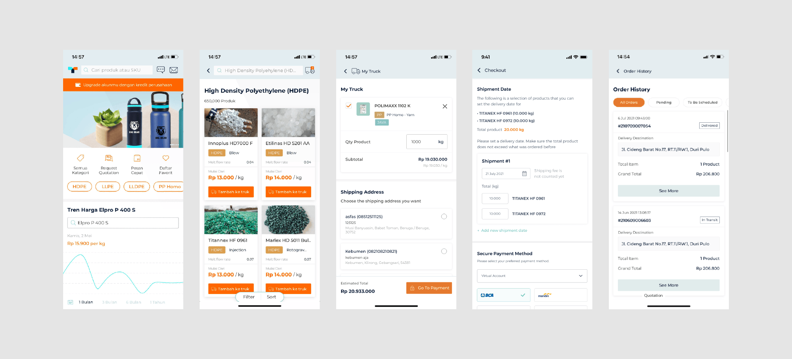
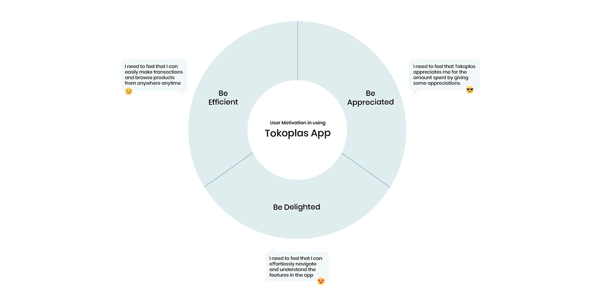
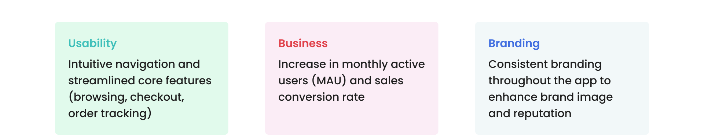

Role
Design and research
Tokoplas app is a B2B e-commerce mobile app that enables plastic resin customers to manage their plastic resin orders in one place. The project initiative was born out of the inconvenience and unintuitiveness in the app core features of browsing, purchasing, and tracking order compared to the website version which resulted in low number of monthly active users (MAU) and conversion rate.
Tokoplas has redesigned its website. However, the core features on the mobile app (browsing, checkout, and order tracking) remain less intuitive compared to the website version. This has led to a low number of MAU as customers are not fully benefiting from the app's features.
Before starting the project, I analyzed the existing app design and found that it suffered from poor visual hierarchy, inefficient use of white space, and usability issues, making the information difficult to digest.
To gain deeper insights into the project, we conducted user interviews and usability tests with 6 participants. We focused on understanding their knowledge of the core features and their experiences with the existing app.
From the interviews conducted, we identified key motivations that drive users to use the Tokoplas app. These insights guided the design of the new app.
We also collected goals from business and product stakeholders to align with the company's vision, while gathering user goals by analyzing research data.
From the research, data collected, and goals carried out, we identified opportunities in our design using the HMW framework:
The checkout process is now streamlined into 3 steps to minimize scrolling and simplify user actions, reducing information overload as a result.

The header now clearly displays the current category level (e.g. PE > HDPE > Film). Numbers of filters applied is indicated with the number inside green circle while current filter state is shown with visual confirmation of active product filters. Additionally, the total number of products is displayed based on the applied filters.

Users can now view order history directly from the Order History menu, instead of going to the Account menu first. The added search bar and date filter enhance flexibility in checking orders based on preferences. Each delivery status has unique color code to improve clarity of the status and reduce cognitive load.
Loyal users will earn rewards and progress through tiered benefits.

Tokoplas offers a loyalty program with five tiers: Regular, Bronze, Silver, Gold, and Platinum. Each tier provides unique benefits such as discounts, free shipping, and exclusive vouchers. Users earn Tokoplas Coins by making transactions on the platform. These coins can be redeemed for rewards in the Rewards Store. The Coins Activities page allows users to track their active coins, check their value in IDR, view expiring coins, and review their transaction history.